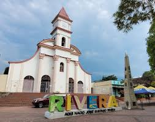

Rivera

Rivera, conocido como el "Municipio Verde" del Huila y anteriormente llamado San Mateo, es un pintoresco pueblo cercano a Neiva, célebre por su vocación agrícola, el turismo termal y el festival del bambuco. Fundado en 1927 y renombrado en honor al ilustre poeta y escritor José Eustasio Rivera, autor de La Vorágine, el municipio es un epicentro cultural que destaca por sus tradiciones, paisajes y la calidez de su gente.
Turismo Termal
Rivera es famoso por sus aguas termales, que atraen a visitantes en busca de relajación y bienestar. Las termas de Rivera ofrecen un entorno natural único, rodeado de exuberante vegetación y paisajes impresionantes. Los visitantes pueden disfrutar de piscinas termales, tratamientos de spa y actividades al aire libre, como senderismo y observación de aves.